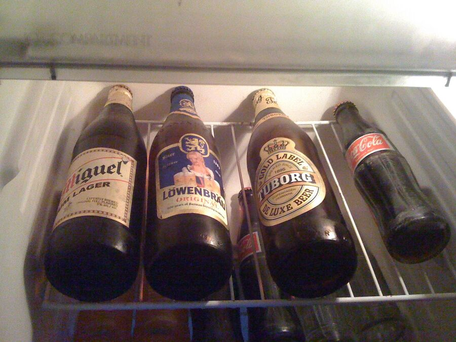

Das Tagebuch
Die Tour
Geschrieben 2009 auf dem iPhone, abends in den Lodges – wenn es Strom und Netz gab.
Anreise

18. September 2009
Ich bin dann mal weg ...
▲
18. September 2009
Gute Nacht Dubai

19. September 2009
Bye Bye Du-bye

Tag 2
Kathmandu
Unterwegs im Khumbu

Tag 3
Padking – 2.600 m
2.600 m

Tag 4
Namche Bazar – 3.450 m
3.450 m

Tag 5
Namche Bazar – Akklimatisierungstag

Tag 6
Dole – 4.080 m
4.080 m

Tag 7
Machermo – 4.400 m
4.400 m

Tag 8
Machermo – Akklimatisierungstag

Tag 9
Gokyo – 4.750 m
4.750 m

Tag 10
Gokyo Ri & Dragnak

Tag 11
über den Cho La Pass 5.370 m nach Lobuche 4.900 m
5.370 m4.900 m

Tag 12
Lobuche – Akklimatisierungstag

Tag 13
Mount Everest Base Camp 5.360 m und Gorak Shep 5.130 m
5.360 m5.130 m

Tag 14
Kala Patthar 5.550 m und Pheriche 4.280 m
5.550 m4.280 m

Tag 15
Tengboche – 3.860 m
3.860 m
Zurück in Kathmandu


Mai bis September 2009
Vorbereitung
Buchung, Training, Ausrüstung und eine Spendenaktion für Kinder in Nepal.
- Das Geld ist angekommenDie Spende von 6.151 EUR ist angekommen. Ich habe bereits eine dankbare E-Mail von Emma Taylor bekommen, Präsidentin der Sunrise Children's Association Inc. Australia. Sie schrieb: „[…] Und …
- SpendenHeute habe ich die Spendenaktion abgeschlossen. Danke für folgende Spenden: 01. 15 € 02. 20 € 03. 20 € 04. 20 € 05. 20 € 06. 40 € 07. 50 € 08. 50 € 09. 50 € 10. 50 € 11. 50 € 12. 100 € 13. …
- Neue Flüge gebuchtWeil unsere Flüge gestrichen wurden, mussten wir neue buchen. Ralf und ich treffen uns jetzt in Dubai, übernachten dort und fliegen am nächsten Tag mit Zwischenstopp in Bahrain nach …
- FitnesstrainingHeute war mein erster Versuch, wieder mit dem Fitnessprogramm anzufangen. Ich wollte nur eine kurze Runde drehen, habe mich dann aber entschieden, von Düsseldorf nach Neuss zu Freunden zu …
- Einkaufstag 2Am 10. August habe ich den Rest der Ausrüstung gekauft. 1x Goretex-Regenjacke (Stretch Infinity Jacket Men, schwarz) = 325 € 1x Trekkingstiefel (Yukon marone, Größe 10) = 160 € 1x …
- Einkaufstag 1Mein letzter Trainingstag war der 20.06.2009. Zwischendurch bin ich 2- oder 3-mal gelaufen, habe es aber nicht gezählt. Ich muss regelmäßiger an meiner Fitness arbeiten. Diese Woche fange …
- NeustartSeit einem Monat habe ich nichts für meine Fitness getan, und ich fühle mich nicht gut damit. Nächste Woche fliege ich nach Mallorca und habe dort Zeit, härter daran zu arbeiten. Aber ich …
- Grüße aus der TürkeiIn den letzten Tagen konnte ich nicht bloggen, weil wir von Dubai in die Türkei umgezogen sind. Und obendrein habe ich mich etwas krank gefühlt. Jetzt sind wir in Istanbul angekommen, und …
- PauseGestern haben wir Dubai endgültig verlassen. In den letzten zwei Wochen war ich wegen des ganzen Umzugs etwas krank. Jetzt sind wir in der Türkei und brauchen noch etwa zwei Wochen, um …
- AusrüstungHier eine Liste der Ausrüstung, die ich brauche (bzw. noch kaufen muss): Rucksack (ca. 30 l) Berg-/Trekkingschuhe Sandalen/Turnschuhe Schlafsack Jacke Regenjacke (Goretex o.ä.) …
- Laufergebnisse Mai 2009Hier eine Grafik meiner Laufergebnisse im Mai 2009. Wenn ich nur 5 km gelaufen bin, habe ich die Zeit verdoppelt und 20 % aufgeschlagen. Das schlechte Ergebnis vom 20. bis 23. Mai liegt an …
- Spenden für benachteiligte Kinder in NepalIch habe beschlossen, unsere Reise zu nutzen, um Geld für arme Kinder in Nepal zu sammeln. Wir möchten es an die „Sunrise Children's Association INC“ spenden ( www.scai.org.au ). SCAI ist …
- Mein Kumpel RalfOkay, Zeit, meinen Kumpel und Geschäftspartner Ralf vorzustellen. Er hat mir die Reise zu meinem 38. Geburtstag geschenkt, und er ist derjenige, der im Himalaya auf mich aufpassen wird.
- FlugdatenHeute haben wir unsere Flugdaten bekommen. Wir fliegen mit Gulf Air. Ralf kommt aus Frankfurt, ich starte in Istanbul. Wir haben beide einen Zwischenstopp in Bahrain. Ziel ist Kathmandu in …
- FotografierenSpiegel Online hat ein paar Tipps zum Fotografieren in den Bergen (danke, Ozan ): Hier geht's zum Artikel Ich muss noch etwas Kameraausrüstung für die Reise kaufen, z. B. ein Stativ, ein …
- Ein Film über die TourHier ein schönes YouTube-Video von Nilsemann , der dieselbe Tour gemacht hat, die wir vorhaben. Das gibt einen ersten Eindruck. Hier klicken, um das Video zu starten
- Probleme mit meinem ZehHeute habe ich wieder versucht, 10 km zu laufen, musste aber bei 8,3 km aufgeben, weil mein Zeh zu sehr schmerzte. Eigentlich ist es nicht wirklich der Zeh. Ich habe seit einigen Tagen …
- Gebucht & bestätigtIch habe die Reise gerade gebucht. Start ist am 18. September, die Reise dauert 22 Tage. Wir kommen also am 10. Oktober zurück. Habe ich schon erwähnt, dass die ganze Reise ein Geschenk …
- Körperliche VorbereitungUm besser vorbereitet zu sein, habe ich mit intensiverem Fitnesstraining angefangen. Heute bin ich zum ersten Mal (seit meiner Schulzeit) 10 km gelaufen. Meine Zeit: 57:30 Min. – keine …
- Blick vom Kala PattharVom höchsten Punkt (Kala Patthar, 5.500 m) sind es immer noch 3.000 m bis zum Gipfel des Mount Everest. Hier ein Bild vom Blick vom Kala Patthar auf den Mount Everest. Aber das ist eine …
- Die TourWelche Gipfel werden wir besteigen? Was sind unsere Etappen? Hier eine Liste: Kathmandu (1.355 m) Lukla (2.700 m) Pakding (2.600) Namche Bazaar (3.450 m) Kloster Thame (3.800 m) Khumjung …
- Allgemeine InformationenZuerst ein paar Infos zur Tour: Mein Freund Ralf kommt mit. Damit ist die Chance, dass wenigstens einer von uns zurückkommt, deutlich höher :) Erster Halt ist Kathmandu in Nepal. Die Tour …
- Ein Blog entstehtLiebe Freunde, ich freue mich sehr auf diese bevorstehende Reise. Es wird wirklich eine Herausforderung. Aber erst muss ich verstehen, wie dieses Baukasten-Blogsystem funktioniert. Ich …